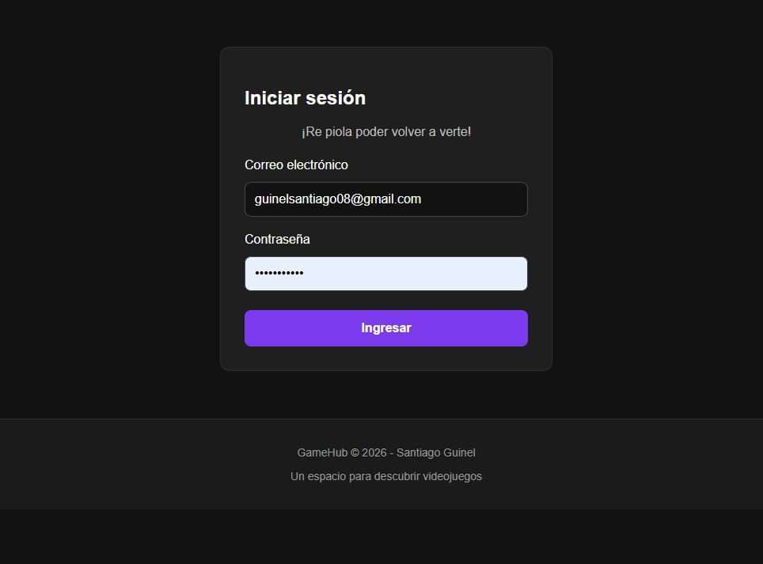
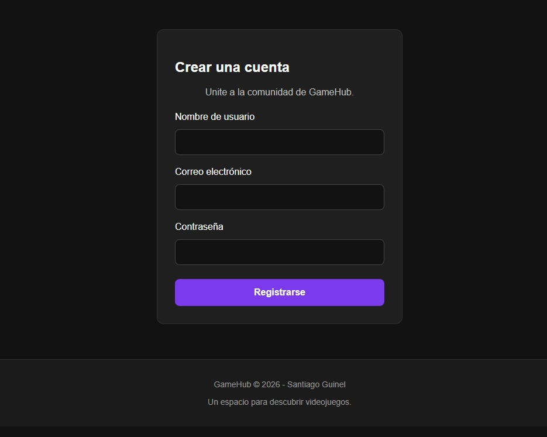
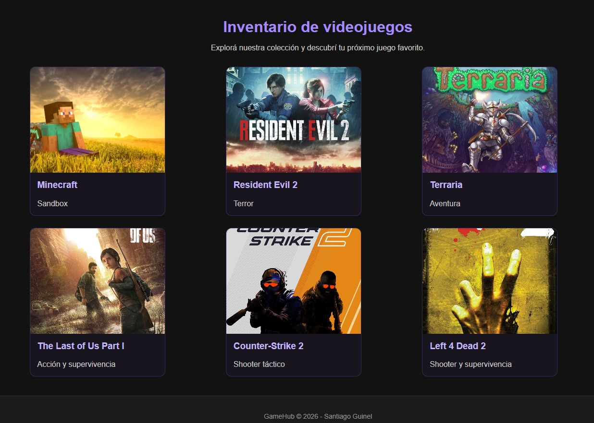
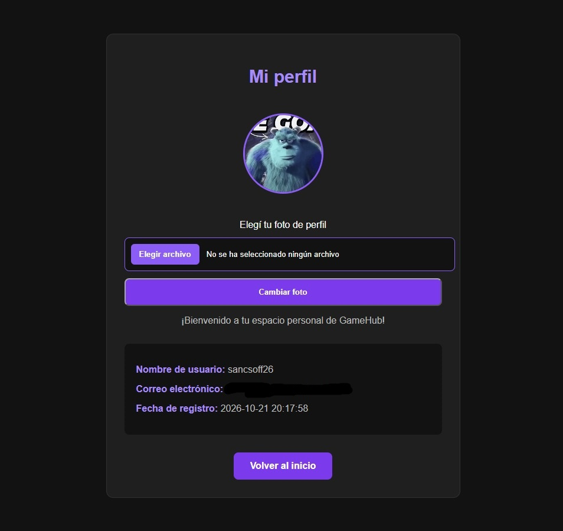
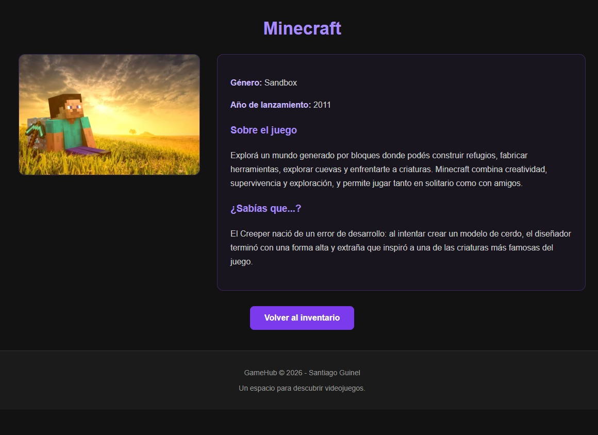

Sobre el proyecto
GameHub es una plataforma web orientada al mundo de los videojuegos, desarrollada como parte de un proyecto académico de Desarrollo Web Dinámico.
El objetivo principal fue crear un sitio que permitiera a los usuarios registrarse, iniciar sesión, personalizar su perfil y explorar un catálogo de videojuegos, ofreciendo un espacio donde encontrar información sobre distintos títulos.
El proyecto fue desarrollado poniendo en práctica los conocimientos adquiridos durante nuestra formación en programación, combinando distintas tecnologías para construir una plataforma web funcional.
¿Qué ofrece?
GameHub cuenta con un sistema de registro e inicio de sesión que permite a los usuarios acceder a su propia cuenta y disponer de un perfil personal.
Los usuarios pueden personalizar su perfil mediante una fotografía y explorar un catálogo de videojuegos que contiene información individual sobre cada título.
Entre los videojuegos incluidos en la plataforma se encuentran Minecraft, Resident Evil 2, Terraria, The Last of Us Part I, Counter-Strike 2 y Left 4 Dead 2.
Cada videojuego dispone de su propia página de información, permitiendo conocer más detalles sobre los títulos disponibles en el catálogo.
capturas del proyecto






¿Cómo fue desarrollado?
GameHub fue desarrollado utilizando distintas tecnologías de desarrollo web, cada una cumpliendo una función específica dentro de la plataforma.
HTML se utilizó para estructurar el contenido, mientras que CSS permitió trabajar en el diseño y la apariencia visual del sitio.
PHP se encargó de la lógica del servidor y del procesamiento de los formularios, mientras que MySQL permitió almacenar y administrar la información de los usuarios y videojuegos.
Finalmente, JavaScript se utilizó para incorporar funcionalidades e interacciones adicionales en la interfaz.
Para el desarrollo y las pruebas locales se utilizó XAMPP como entorno de servidor, junto con phpMyAdmin para administrar la base de datos.